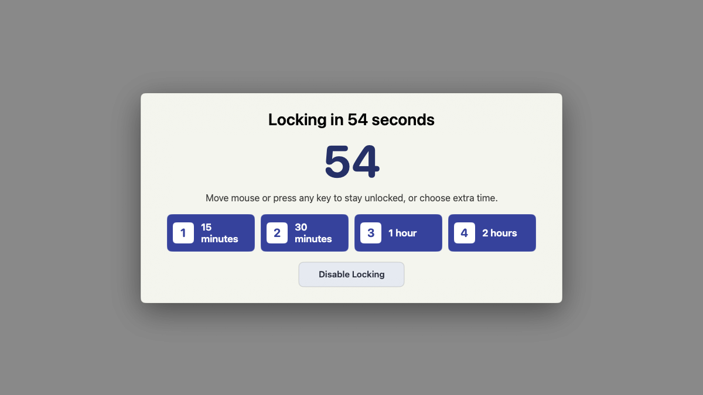
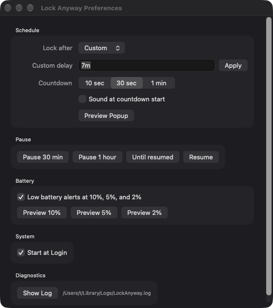
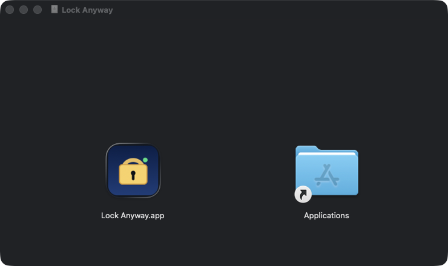

A backstop for your Mac's lock
Apps can keep your Mac awake.
Not unlocked.
When you walk away, Lock Anyway warns you, then locks your Mac—even if video, remote access, or another app keeps it awake.
- Free
- macOS 13+
- Apple silicon
- Apple notarized

The gap it closes
Keep awake
≠ stay unlocked.
Videos, meetings, remote sessions, and downloads can keep your Mac awake for hours.
Lock Anyway asks one question: has anyone touched the keyboard or mouse? If not, it locks on your schedule.
How it works
Set it once.
Walk away safely.
It runs quietly in the menu bar and never records what you type.
-
01
Watch real inactivity
It counts the time since your last keyboard or mouse input.
-
02
Warn you first
A countdown lets you cancel, add time, or pause.
-
03
Lock the native way
Then macOS shows its normal Lock Screen.

Your timing, your call
Strict when it matters. Easy when it doesn’t.
-
01
Choose the idle limit
Pick a preset or type your own.
-
02
Snooze or pause
Add 15 minutes to two hours, or pause until you resume.
-
03
Low-battery alerts
Warnings at 10%, 5%, and 2% that close when you plug in.
Install in a minute
Download. Drag. Done.
- 1
Download and open LockAnyway.dmg.
- 2
Drag Lock Anyway into Applications.
- 3
Open it from Applications.
Signed and notarized by Apple. No Terminal needed.

Private by construction
Nothing leaves your Mac.
No account, analytics, or network connection. Lock Anyway reads the macOS idle timer, never your keystrokes.
Read the privacy policy →Questions, answered
The useful details.
Why not just use the built-in Lock Screen settings?+
If macOS already locks when you expect, you don't need it. Lock Anyway is a backstop for when media, remote access, or another app keeps the display awake.
Does it read what I type?+
No. It reads only the seconds since your last input, never keys, clicks, or screen contents.
Why might macOS ask for Accessibility permission?+
Usually it won't. Lock Anyway locks your session directly and asks for Accessibility only on systems where it must press Control–Command–Q instead.
Will downloads or remote sessions keep running?+
Yes. Locking doesn't quit any apps. Whether the Mac stays awake afterward depends on macOS and the app keeping it awake.
Is it open source?+
Yes, under the MIT License. Read the source, build it yourself, or report issues on GitHub.